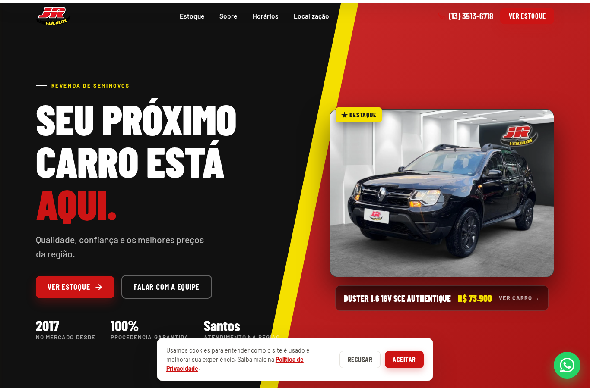
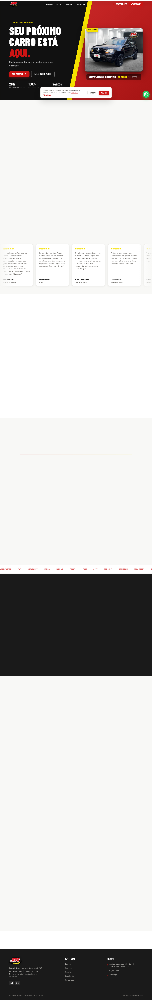

Sistema de Investigação de Marca e Identidade Online
https://jrveiculossantos.com.br/
Prioridade: MEDIUM · Cenário: B_AMBIGUOUS_COMMUNICATION · Revisão humana: PENDING
A JR Veículos é um estabelecimento comercial dentro do escopo (revenda de veículos seminovos) que intermedeia crédito automotivo e cita o Banco BV entre seus parceiros de financiamento. A identidade própria da loja é predominante e não há imitação do banco. No entanto, o enquadramento como correspondente bancário não é formalizado na página, e faltam o CNPJ e canais de ouvidoria, justificando a classificação em B_AMBIGUOUS_COMMUNICATION e prioridade MEDIUM para averiguação de governança e conformidade à Resolução CMN nº 4.935/2021. [Revisor: CONFIRM] A JR Veículos é uma loja de seminovos que oferta financiamento de veículos citando o Banco BV em lista de bancos parceiros. Embora possua identidade visual própria bem definida, opera sem explicitar razão social, CNPJ, condição de correspondente bancário ou contato de ouvidoria, em desacordo com as exigências de transparência da Resolução CMN nº 4.935/2021. A classificação REVIEW_REQUIRED com prioridade MEDIUM é confirmada.


| Ref | Tipo | Local | Conteúdo |
|---|---|---|---|
| E-URL | domain | url | URL final: https://jrveiculossantos.com.br/ (domínio: jrveiculossantos.com.br) |
| E-DISC-001 | text | search_index | Índice de busca (grounding): jrveiculossantos.com.br — Com base nas consultas e nos critérios de auditoria de conformidade (Resolução CMN nº 4.935/2021) e proteção marcária, foram identificadas páginas públicas de terceiros (revendas de veículos, promotoras de crédito, empresas de energia solar e perfis de divulgação) que utilizam a marca **Banco BV / BV Financeira** para captação de clientes com oferta de simulação e atendimento via WhatsApp | **URL:** `https://jrveiculossantos.com.br` | *) | **Conformidade CMN nº 4.935/2021:** Não há identificação de CNPJ, razão social ou menção ao enquadramento como correspondente bancário segundo as normas do Banco Central |
| E-SHOT-VIEWPORT | screenshot | viewport | evidence/C5c5bdd8b03/attempt-1/viewport.png (sha256 e758896eae25e2ce…) |
| E-SHOT-FULL | screenshot | page | evidence/C5c5bdd8b03/attempt-1/fullpage.png (sha256 ee2d41e9568b7942…) |
| E-TITLE | title | head | JR Veículos — Seminovos com procedência em Santos, SP |
| E-META-1 | meta | head | description: Revenda de seminovos em Santos desde 2017. Carros revisados, com procedência garantida, financiamento facilitado e aceitamos seu usado na troca. Nota 4,9 no Google. |
| E-META-2 | meta | head | og:site_name: JR Veículos |
| E-META-3 | meta | head | og:title: JR Veículos — Seminovos com procedência em Santos, SP |
| E-META-4 | meta | head | og:description: Carros revisados, procedência garantida e financiamento facilitado. Revenda de confiança em Santos desde 2017. Nota 4,9 no Google. |
| E-CANONICAL | meta | head | https://jrveiculossantos.com.br/ |
| E-HEAD-1 | heading | page | SEU PRÓXIMO CARRO ESTÁ AQUI. |
| E-HEAD-2 | heading | page | DESTAQUES DA SEMANA |
| E-HEAD-3 | heading | page | NISSAN KICKS 1.6 16V ADVANCE |
| E-HEAD-4 | heading | page | RENAULT CAPTUR 1.6 16V SCE LIFE |
| E-HEAD-5 | heading | page | RENAULT DUSTER 1.6 16V SCE AUTHENTIQUE |
| E-HEAD-6 | heading | page | QUEM COMPROU, APROVOU |
| E-HEAD-7 | heading | page | O QUE RESOLVEMOS NA PRÁTICA |
| E-HEAD-8 | heading | page | COMO FUNCIONA |
| E-HEAD-9 | heading | page | COMO AVALIAMOS CADA VEÍCULO |
| E-HEAD-10 | heading | page | FINANCIAMENTO FACILITADO |
| E-HEAD-11 | heading | page | SIMULE SEU FINANCIAMENTO |
| E-HEAD-12 | heading | page | PERGUNTAS FREQUENTES |
| E-HEAD-13 | heading | page | HORÁRIOS DE FUNCIONAMENTO |
| E-HEAD-14 | heading | page | ESTAMOS ABERTOS |
| E-HEAD-15 | heading | page | VENHA NOS VISITAR |
| E-HDR | text | header | Estoque Sobre Horários Localização (13) 3513-6718 VER ESTOQUE |
| E-FOLD | text | viewport (acima da dobra) | Estoque Sobre Horários Localização (13) 3513-6718 Ver Estoque Revenda de seminovos Seu próximo carro está aqui. Ver Estoque Falar com a equipe 2017 No mercado desde 100% Procedência garantida Santos Atendimento na região ★ Destaque Duster 1.6 16V SCE Authentique R$ 73.900 Ver carro → Role para explorar Usamos cookies para entender como o site é usado e melhorar sua experiência. Saiba mais na Política de Privacidade . Recusar Aceitar |
| E-FTR | text | footer | Revenda de seminovos em Santos desde 2017, com atendimento de venda e pós-venda focado na sua satisfação. Confiança que se vê no detalhe. NAVEGAÇÃO Estoque Sobre nós Horários Localização Privacidade CONTATO Av. Washington Luís, 238 — Loja 5, Encruzilhada, Santos — SP (13) 3513-6718 WhatsApp © 2026 JR Veículos. Todos os direitos reservados. Seminovos com procedência |
| E-NAV | nav | header | <https://jrveiculossantos.com.br/index.html> | Estoque <https://jrveiculossantos.com.br/estoque.html> | Sobre <https://jrveiculossantos.com.br/sobre.html> | Horários <https://jrveiculossantos.com.br/#horarios> | Localização <https://jrveiculossantos.com.br/#localizacao> | (13) 3513-6718 <tel:+551335136718> | VER ESTOQUE <https://jrveiculossantos.com.br/estoque.html> |
| E-CTA-1 | cta | header | VER ESTOQUE <https://jrveiculossantos.com.br/estoque.html> |
| E-CTA-2 | cta | page | VER ESTOQUE <https://jrveiculossantos.com.br/estoque.html> |
| E-CTA-3 | cta | page | FALAR COM A EQUIPE <https://jrveiculossantos.com.br/#horarios> |
| E-CTA-4 | cta | page | VER ESTOQUE COMPLETO <https://jrveiculossantos.com.br/estoque.html> |
| E-CTA-5 | cta | page | QUERO ESSA SIMULAÇÃO <https://wa.me/551335136718?text=Ol%C3%A1!%20Fiz%20uma%20simula%C3%A7%C3%A3o%20no%20site%3A%0A%E2%80%A2%20Ve%C3%ADculo%3A%20R%24%2080.000%0A%E2%80%A2%20Entrada%3A%20R%24%2016.000%0A%E2%80%A2%20Prazo%3A%2036x%0A%E2%80%A2%20Parcela%20estimada%3A%20R%24%202.471%0APodem%20me%20passar%20as%20condi%C3%A7%C3%B5es%20reais%3F> |
| E-CTA-6 | cta | page | Vocês aceitam troca? |
| E-CTA-7 | cta | page | Os carros têm garantia? |
| E-CTA-8 | cta | page | Vocês fazem o despachante? |
| E-CTA-9 | cta | page | Posso ver o histórico do veículo? |
| E-CTA-10 | cta | page | Tem financiamento? Como funciona? |
| E-CTA-11 | cta | page | Como agendar uma visita? |
| E-CTA-12 | cta | page | FALAR NO WHATSAPP <https://wa.me/551335136718?text=Ol%C3%A1!%20Vim%20pelo%20site%20e%20quero%20saber%20mais%20sobre%20os%20carros.> |
| E-CTA-13 | cta | page | TRAÇAR ROTA <https://www.google.com/maps/dir/?api=1&destination=Av.+Washington+Lu%C3%ADs+238+Encruzilhada+Santos+SP> |
| E-CTA-14 | cta | page | SEGUIR @JRVEICULOSBAIXADA <https://www.instagram.com/jrveiculosbaixada/> |
| E-CTA-15 | cta | page | RECUSAR |
| E-CTA-16 | cta | page | ACEITAR |
| E-CONTACT-1 | contact | header | (13) 3513-6718 <tel:+551335136718> |
| E-CONTACT-2 | contact | page | INTERESSE <https://wa.me/551335136718?text=Ol%C3%A1!%20Tenho%20interesse%20no%20Nissan%20Kicks%201.6%2016V%20Advance%202023%2F2024%20(R%24%20108.900).%20Ainda%20est%C3%A1%20dispon%C3%ADvel%3F> |
| E-CONTACT-3 | contact | page | INTERESSE <https://wa.me/551335136718?text=Ol%C3%A1!%20Tenho%20interesse%20no%20Renault%20Captur%201.6%2016V%20SCE%20Life%202020%2F2021%20(R%24%2079.900).%20Ainda%20est%C3%A1%20dispon%C3%ADvel%3F> |
| E-CONTACT-4 | contact | page | INTERESSE <https://wa.me/551335136718?text=Ol%C3%A1!%20Tenho%20interesse%20no%20Renault%20Duster%201.6%2016V%20SCE%20Authentique%202018%2F2019%20(R%24%2073.900).%20Ainda%20est%C3%A1%20dispon%C3%ADvel%3F> |
| E-CONTACT-5 | contact | page | QUERO ESSA SIMULAÇÃO <https://wa.me/551335136718?text=Ol%C3%A1!%20Fiz%20uma%20simula%C3%A7%C3%A3o%20no%20site%3A%0A%E2%80%A2%20Ve%C3%ADculo%3A%20R%24%2080.000%0A%E2%80%A2%20Entrada%3A%20R%24%2016.000%0A%E2%80%A2%20Prazo%3A%2036x%0A%E2%80%A2%20Parcela%20estimada%3A%20R%24%202.471%0APodem%20me%20passar%20as%20condi%C3%A7%C3%B5es%20reais%3F> |
| E-CONTACT-6 | contact | page | FALAR NO WHATSAPP <https://wa.me/551335136718?text=Ol%C3%A1!%20Vim%20pelo%20site%20e%20quero%20saber%20mais%20sobre%20os%20carros.> |
| E-CONTACT-7 | contact | page | SEGUIR @JRVEICULOSBAIXADA <https://www.instagram.com/jrveiculosbaixada/> |
| E-CONTACT-8 | contact | footer | Instagram <https://www.instagram.com/jrveiculosbaixada/> |
| E-CONTACT-9 | contact | footer | WhatsApp <https://wa.me/551335136718> |
| E-CONTACT-10 | contact | footer | (13) 3513-6718 <tel:+551335136718> |
| E-CONTACT-11 | contact | footer | WhatsApp <https://wa.me/551335136718> |
| E-CONTACT-12 | contact | page | WhatsApp <https://wa.me/551335136718?text=Ol%C3%A1!%20Vim%20pelo%20site%20da%20JR%20Ve%C3%ADculos.> |
| E-IMG-1 | image | page (acima da dobra) | imagem alt='JR Veículos' src=https://jrveiculossantos.com.br/assets/jr-logo.png (285x163, acima da dobra) |
| E-IMG-2 | image | header (acima da dobra) | imagem alt='JR Veículos' src=https://jrveiculossantos.com.br/assets/jr-logo.png (81x46, acima da dobra) |
| E-IMG-3 | image | footer | imagem alt='JR Veículos' src=https://jrveiculossantos.com.br/assets/jr-logo.png (112x64, abaixo da dobra) |
| E-TXT-001 | text | page | ATENDIMENTO NA REGIÃO |
| E-TXT-002 | text | page | "Fui muito bem atendido! Equipe super atenciosa, tiraram todas as minhas dúvidas e me ajudaram a encontrar o carro ideal. Atendimento de qualidade, ambiente organizado e transparente. Recomendo demais!" |
| E-TXT-003 | text | page | "Atendimento excelente, brigaram por taxa com os bancos, chegaram no financiamento que eu desejava. O carro é excelente, já vai fazer 5 anos da compra e só mantive a manutenção, nenhuma surpresa. Excelente loja." |
| E-TXT-004 | text | page | "Rodei a baixada santista para encontrar essa loja, que avaliou muito bem o meu veículo, sem burocracia e o pagamento feito no ato. Parabéns pelo atendimento e honestidade." |
| E-TXT-005 | text | page | "Loja perfeita. Tive um ótimo atendimento, nunca tive um problema com essa loja. Recomendo. Obrigado à loja perfeita!" |
| E-TXT-006 | text | page | "Ótima, um excelente atendimento. Estou muito feliz com meu carro novo!" |
| E-TXT-007 | text | page | "Veículos de 1ª qualidade, atendimento inigualável. Vale uma visita para conhecer os veículos." |
| E-TXT-008 | text | page | "Fui muito bem atendido! Equipe super atenciosa, tiraram todas as minhas dúvidas e me ajudaram a encontrar o carro ideal. Atendimento de qualidade, ambiente organizado e transparente. Recomendo demais!" |
| E-TXT-009 | text | page | "Atendimento excelente, brigaram por taxa com os bancos, chegaram no financiamento que eu desejava. O carro é excelente, já vai fazer 5 anos da compra e só mantive a manutenção, nenhuma surpresa. Excelente loja." |
| E-TXT-010 | text | page | "Rodei a baixada santista para encontrar essa loja, que avaliou muito bem o meu veículo, sem burocracia e o pagamento feito no ato. Parabéns pelo atendimento e honestidade." |
| E-TXT-011 | text | page | "Loja perfeita. Tive um ótimo atendimento, nunca tive um problema com essa loja. Recomendo. Obrigado à loja perfeita!" |
| E-TXT-012 | text | page | "Ótima, um excelente atendimento. Estou muito feliz com meu carro novo!" |
| E-TXT-013 | text | page | "Veículos de 1ª qualidade, atendimento inigualável. Vale uma visita para conhecer os veículos." |
| E-TXT-014 | text | page | Levamos a proposta a vários bancos parceiros e negociamos taxa por taxa até chegar na condição que ele queria — sem empurrar um contrato pior. |
| E-TXT-015 | text | page | "Atendimento excelente, brigaram por taxa com os bancos, chegaram no financiamento que eu desejava. O carro é excelente, vai fazer 5 anos da compra, e só mantive a manutenção, nenhuma surpresa." |
| E-TXT-016 | text | page | "Rodei a baixada santista para encontrar essa loja, que avaliou muito bem o meu veículo, sem burocracia e o pagamento feito no ato. Parabéns pelo atendimento e honestidade." |
| E-TXT-017 | text | page | FALE PELO WHATSAPP |
| E-TXT-018 | text | page | Simule sua parcela na hora aqui do site. Trabalhamos com os principais bancos do mercado — aprovação rápida e parcelas que cabem no seu bolso. |
| E-TXT-019 | text | page | Banco BV |
| E-TXT-020 | text | page | Simulação meramente ilustrativa — não constitui proposta de crédito. A parcela usa taxa média de mercado; os valores, a taxa e o CET finais dependem de análise e aprovação da instituição financeira. |
| E-TXT-021 | text | page | Trabalhamos com os principais bancos (Itaú, Santander, BV, Caixa e outros) e fazemos a simulação na hora. Aprovação rápida e parcelas que cabem no seu orçamento. |
| E-TXT-022 | text | page | É só mandar uma mensagem no WhatsApp! Atendemos de segunda a sábado, das 9h às 19h, e domingos das 9h às 16h. Pode ir direto também, sem agendamento. |
| E-TXT-023 | text | page | ATENDIMENTO |
| E-TXT-024 | text | page | Estamos de portas abertas para te receber. Prefere agilizar? Chame a gente no WhatsApp. |
| E-TXT-025 | text | page | FALAR NO WHATSAPP |
| E-TXT-026 | text | page | Revenda de seminovos em Santos desde 2017, com atendimento de venda e pós-venda focado na sua satisfação. Confiança que se vê no detalhe. |
| E-TXT-027 | text | page |
| Dimensão | Sinal | Achado | Refs |
|---|
A JR Veículos é um estabelecimento comercial dentro do escopo (revenda de veículos seminovos) que intermedeia crédito automotivo e cita o Banco BV entre seus parceiros de financiamento. A identidade própria da loja é predominante e não há imitação do banco. No entanto, o enquadramento como correspondente bancário não é formalizado na página, e faltam o CNPJ e canais de ouvidoria, justificando a classificação em B_AMBIGUOUS_COMMUNICATION e prioridade MEDIUM para averiguação de governança e conformidade à Resolução CMN nº 4.935/2021.
Nenhum CNPJ ou razão social identificáveis no conteúdo coletado.
| Tipo | Valor | Ref | Contexto |
|---|---|---|---|
| domain | jrveiculossantos.com.br | E-URL | |
| social_profile | https://www.instagram.com/jrveiculosbaixada/ | E-CTA-14 | |
| trade_name | JR Veículos | E-META-2 | |
| phone | (13) 3513-6718 | E-HDR | |
| Índice de busca (grounding): jrveiculossantos.com.br — Com base nas consultas e nos critérios de auditoria de conformidade (Resolução CMN nº 4.935/2021) e proteção marcária, foram identificadas página | E-DISC-001 | ||
| INTERESSE <https://wa.me/551335136718?text=Ol%C3%A1!%20Tenho%20interesse%20no%20Nissan%20Kicks%201.6%2016V%20Advance%202023%2F2024%20(R%24%20108.900).%20Ainda%20est%C3%A1%20dispon%C3%ADvel%3F> | E-CONTACT-2 | ||
| INTERESSE <https://wa.me/551335136718?text=Ol%C3%A1!%20Tenho%20interesse%20no%20Renault%20Captur%201.6%2016V%20SCE%20Life%202020%2F2021%20(R%24%2079.900).%20Ainda%20est%C3%A1%20dispon%C3%ADvel%3F> | E-CONTACT-3 | ||
| INTERESSE <https://wa.me/551335136718?text=Ol%C3%A1!%20Tenho%20interesse%20no%20Renault%20Duster%201.6%2016V%20SCE%20Authentique%202018%2F2019%20(R%24%2073.900).%20Ainda%20est%C3%A1%20dispon%C3%ADvel% | E-CONTACT-4 | ||
| QUERO ESSA SIMULAÇÃO <https://wa.me/551335136718?text=Ol%C3%A1!%20Fiz%20uma%20simula%C3%A7%C3%A3o%20no%20site%3A%0A%E2%80%A2%20Ve%C3%ADculo%3A%20R%24%2080.000%0A%E2%80%A2%20Entrada%3A%20R%24%2016.000% | E-CONTACT-5 |
Mapeamento indicativo para apoio à auditoria. Não constitui conclusão regulatória; a decisão definitiva pertence à auditoria.
Fonte: NORMATIVE
Art. 14. O contrato de correspondente deve estabelecer: [...] II - vedação à utilização, pelo contratado, de logomarca ou de outros atributos que sejam similares aos adotados pela instituição contratante em suas agências, postos de atendimento, sítio eletrônico na internet, aplicativo ou outras plataformas de comunicação em rede;
Evidência observada: —
Fonte: NORMATIVE
Art. 14. O contrato de correspondente deve estabelecer: [...] III - divulgação ao público, pelo contratado, de sua condição de prestador de serviços à instituição contratante, identificada pelo nome com que é conhecida no mercado, com descrição dos produtos e serviços oferecidos e canais de contato da instituição contratante, inclusive de sua ouvidoria, em local visível, em destaque e em formato legível, por meio de: a) sítio eletrônico do correspondente na internet, acessível na página inicial; b) aplicativo e outras plataformas de comunicação em rede do correspondente; [...]
Hipótese: Divulgação ao público da condição de prestador de serviços/parceria ausente, insuficiente, ambígua ou sem destaque. A norma disciplina correspondentes contratados; o responsável não foi identificado como correspondente.
Evidência observada: E-DISC-001 E-FTR E-TXT-018 E-TXT-019 E-TXT-020 E-TXT-021
Informação faltante:
Fonte: NORMATIVE
Art. 3º O correspondente atua por conta e sob as diretrizes da instituição contratante, que assume inteira responsabilidade pelo atendimento prestado aos clientes e usuários por meio do contratado.
Evidência observada: —
Se o responsável não for correspondente contratado, os indícios podem caracterizar uso indevido de marca ou fraude, fora do escopo da Res. 4.935: avaliar encaminhamento às áreas jurídica/segurança.
Limitações: requisitos contratuais/internos não fornecidos: mapeamento limitado ao texto normativo
Decisão: CONFIRM → REVIEW_REQUIRED / MEDIUM
A JR Veículos é uma loja de seminovos que oferta financiamento de veículos citando o Banco BV em lista de bancos parceiros. Embora possua identidade visual própria bem definida, opera sem explicitar razão social, CNPJ, condição de correspondente bancário ou contato de ouvidoria, em desacordo com as exigências de transparência da Resolução CMN nº 4.935/2021. A classificação REVIEW_REQUIRED com prioridade MEDIUM é confirmada.
| Tema | Severidade | Questionamento | Refs |
|---|---|---|---|
| Ausência de overbranding e risco reduzido de fraude | LOW | A revenda opera sob marca própria bem consolidada visualmente (JR Veículos), citando o Banco BV apenas em lista multibancos ('Itaú, Santander, BV, Caixa e outros'), o que afasta personificação direta ou golpe clássico. | E-SHOT-VIEWPORT E-IMG-1 E-TXT-021 |
| domain_attribution | MEDIUM | Responsável pela página não identificado; a conclusão sobre a marca não pode ser atribuída a um estabelecimento específico. | E-URL |
| Fonte | Consulta / hipótese | URL original | Título / trecho |
|---|---|---|---|
| grounding | Objetivo: Atendimento e simulação de financiamento via WhatsApp apresentados em nome da marca.
Execute no Google Search as seguintes consultas (dorks):
- ("simulação" OR "atendimento Banco BV") ("Banco BV" OR "bv financeira") whatsapp (financiamento OR veículos) -site:bv.com.br -site:bancobv.com.br -site:bvfinanceira.com.br -site:bvinvestimentos.com.br -site:napista.com.br -site:bvopen.com.br -site:meufinanciamentosolar.com.br -site:votorantim.com.br -site:vam.com.br -site:reclameaqui.com.br -site:jusbrasil.com.br -site:jus.br
- ("parceiro BV" OR "parceiro do Banco BV" OR "parceria com o Banco BV") financiamento -site:bv.com.br -site:bancobv.com.br -site:bvfinanceira.com.br -site:bvinvestimentos.com.br -site:napista.com.br -site:bvopen.com.br -site:meufinanciamentosolar.com.br -site:votorantim.com.br -site:vam.com.br -site:reclameaqui.com.br -site:jusbrasil.com.br -site:jus.br
Liste de forma abrangente as páginas públicas encontradas (até 12 resultados distintos), informando para cada uma o nome do estabelecimento/perfil, a URL e como a marca é utilizada (destaque visual, título, feirão, simulador, redes sociais e se há ou não identificação clara de CNPJ e condição de correspondente bancário). H3-service:simulacao-whatsapp | https://jrveiculossantos.com.br/ | jrveiculossantos.com.br Com base nas consultas e nos critérios de auditoria de conformidade (Resolução CMN nº 4.935/2021) e proteção marcária, foram identificadas páginas públicas de terceiros (revendas de veículos, promotoras de crédito, empresas de energia solar e perfis de divulgação) que utilizam a marca **Banco BV / BV Financeira** para captação de clientes com oferta de simulação e atendimento via WhatsApp | **URL:** `https://jrveiculossantos.com.br` | *) | **Conformidade CMN nº 4.935/2021:** Não há identificação de CNPJ, razão social ou menção ao enquadramento como correspondente bancário segundo as normas do Banco Central |
Original: https://jrveiculossantos.com.br/
Final: https://jrveiculossantos.com.br/
| Artefato | Caminho | SHA-256 | Bytes |
|---|---|---|---|
| screenshot_viewport | evidence/C5c5bdd8b03/attempt-1/viewport.png | e758896eae25e2ce6ddc15576084266720182daa1c2f7be7e4e8ca51c45bb8dd | 455668 |
| screenshot_full | evidence/C5c5bdd8b03/attempt-1/fullpage.png | ee2d41e9568b79421fddecb7394457c1cde3149db7a43047b74b19f53dbc97f1 | 612242 |
| html | evidence/C5c5bdd8b03/attempt-1/page.html.txt | b8cd0740e05b94da4768c02fb9577252a72bb01f8d7a6aabfdd4256abf230a6f | 61089 |
| text | evidence/C5c5bdd8b03/attempt-1/text.txt | ef0c47b43ea6f45ce237009fc26fe773eb18079689898759151133c79dd29bab | 10370 |
| page_data | evidence/C5c5bdd8b03/attempt-1/page.json | c92844ed892d2945c79ca9885c18528dedc2c4a5284c7db3b61d36846eaee127 | 27677 |
| Quando | De | Para | Nota |
|---|---|---|---|
| 2026-11-25T18:12:09+00:00 | DISCOVERED | QUEUED | prioritised (score 1.5) |
| 2026-11-25T19:17:34+00:00 | QUEUED | COLLECTING | |
| 2026-11-25T19:17:40+00:00 | COLLECTING | COLLECTED | |
| 2026-11-25T19:17:40+00:00 | COLLECTED | ANALYZING | |
| 2026-11-25T19:18:00+00:00 | ANALYZING | REVIEWING | |
| 2026-11-25T19:18:11+00:00 | REVIEWING | COMPLETED |